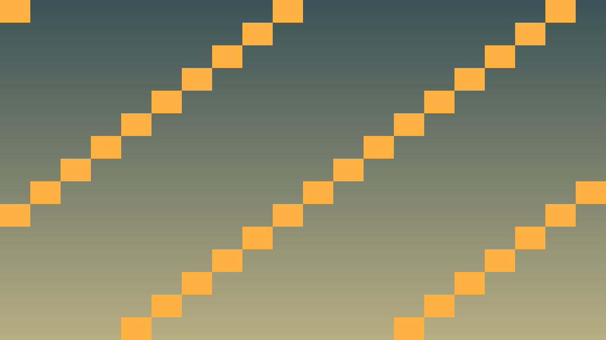
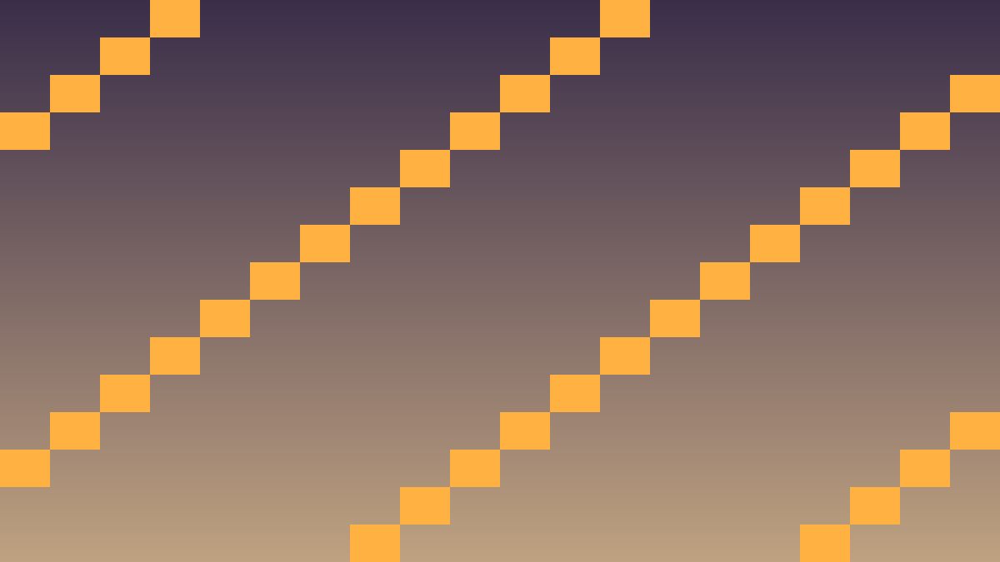

Tavs šīs stundas izaicinājums: Pievienot mūziku, skaņas efektus un audio buses spēlei.
Pirms sāc: izmanto iepriekš apgūto un šīs lapas teorijas/koda piemērus. Ja vajadzīga jauna komanda vai rīks, vispirms atrodi tās paraugu teorijas sadaļā.
Godot audio sistēma izmanto AudioStreamPlayer nodes ar audio bus arhitektūru.
#include <godot_cpp/classes/audio_stream_player.hpp>
#include <godot_cpp/classes/resource_loader.hpp>
// Atskaņot SFX
AudioStreamPlayer* sfx = get_node<AudioStreamPlayer>("SFX");
sfx->set_stream(load_audio("res://sounds/jump.ogg"));
sfx->play();
// Mūzika ar fade-in
void play_music_fade_in(String path) {
music_player->set_stream(load_audio(path));
music_player->set_volume_db(-30);
music_player->play();
Tween* t = create_tween();
t->tween_method("set_volume_db", -30, -10, 2.0); // fade up
}Audio buses: Master → Music, SFX, Voice. Lietotājs var pielāgot katru atsevišķi.
Atceries: šajā stundā nepietiek tikai panākt redzamu efektu editorā. Paskaidro, kura C++ klase glabā stāvokli, kura metode to maina un kā Godot node struktūra šo kodu izmanto.
Pārbaudi: UI signāli, audio darbības, debug izvade un publicēšanas sagatave ir sasaistīta ar C++ spēles stāvokli.
#include <godot_cpp/variant/string.hpp>
using namespace godot;
struct PolishCheckpoint {
String lesson = "6.3 Audio sistēma";
bool uses_cpp = true;
bool connects_ui_signals = true;
bool routes_audio_events = true;
bool verifies_export_build = true;
};Atpazīsti šīs stundas galveno ideju un sasaisti to ar gala projektu Puzzle spēle.
.hpp, .cpp vai Godot scēnas failā, nevis uzreiz lielu funkciju.klases_punkti, zvana_taimeris, pazudusais_markieris vai kafijas_pauze; mazliet humora drīkst, bet kodam jāpaliek skaidram.Izmanto šīs stundas prasmi nelielā, strādājošā projekta daļā.
.hpp, .cpp vai Godot scēnas failā, izmantojot teorijas piemēru kā sākumpunktu.Pārbaudi risinājumu, salīdzini rezultātus un atrodi, ko uzlabot.
Pievieno nelielu radošu uzlabojumu ar klases dzīves piemēru, nepārsniedzot apgūto vielu.


class AudioManager : public Node {
GDCLASS(AudioManager, Node)
private:
std::vector<AudioStreamPlayer*> sfx_pool;
AudioStreamPlayer* music_player;
static const int POOL_SIZE = 8;
public:
void _ready() override {
for (int i = 0; i < POOL_SIZE; i++) {
AudioStreamPlayer* p = memnew(AudioStreamPlayer);
p->set_bus("SFX");
add_child(p);
sfx_pool.push_back(p);
}
music_player = memnew(AudioStreamPlayer);
music_player->set_bus("Music");
add_child(music_player);
}
void play_sfx(String path) {
for (auto p : sfx_pool) {
if (!p->is_playing()) {
Ref<AudioStream> stream = ResourceLoader::get_singleton()->load(path);
p->set_stream(stream);
p->play();
return;
}
}
}
void play_music(String path) {
Ref<AudioStream> stream = ResourceLoader::get_singleton()->load(path);
music_player->set_stream(stream);
music_player->play();
}
};